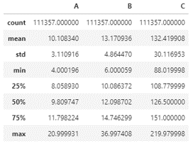
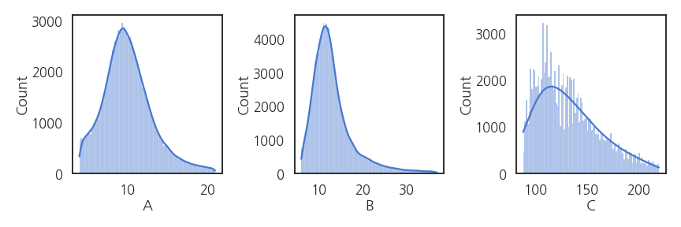
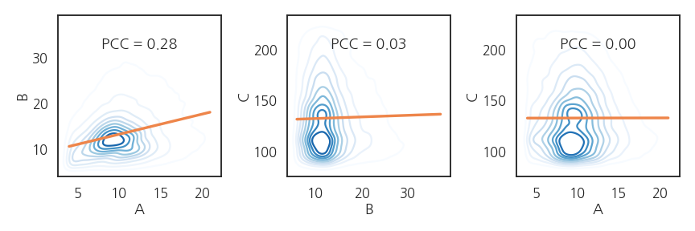
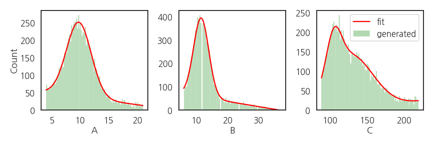
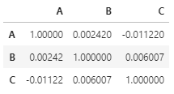
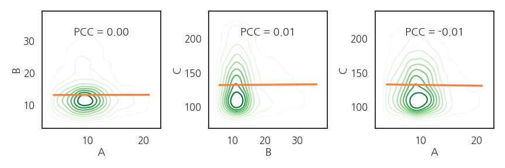

- 새로운 데이터는
numpy.random함수로 만들 수 있습니다. - 정규분포나 균일하게 만드는 것은 많이들 합니다만,
- 기존 데이터의 분포를 모방해 봅시다.
1. 기존 데이터
- 10만개가 조금 넘는 데이터가 있습니다.
- 대강 이렇게 생겼습니다.
1
2
3import pandas as pd
df = pd.read_pickle("randgen_dist.pkl")
display(df.describe())
seaborn.set_palette
seaborn.set_context
seaborn.set_style
seaborn.histplot
- 분포를 확인해보겠습니다.
- 보고용 그림이 아니므로 손을 많이 대고 싶지 않습니다.
- 스타일을 잡고 간단히 그립니다.
- seaborn이 이럴 때 좋습니다.
1
2
3
4
5
6
7
8
9
10
11import matplotlib.pyplot as plt
import seaborn as sns
sns.set_palette("muted")
sns.set_context("talk")
sns.set_style("white")
fig, axs = plt.subplots(ncols=3, figsize=(12, 4))
sns.histplot(df["A"], ax=axs[0], kde=True, bins=100)
sns.histplot(df["B"], ax=axs[1], kde=True, bins=100)
sns.histplot(df["C"], ax=axs[2], kde=True, bins=100, kde_kws={"bw_adjust":5})
fig.tight_layout()
- 2변수 분포를 확인해보겠습니다.
- 2차원 KDE plot을 그리고 pearson correlation coefficient를 봅니다.실행결과: 피어슨 계수가 모두 작네요.
1
2
3
4PCC_AB = df.corr().loc["A", "B"]
PCC_BC = df.corr().loc["B", "C"]
PCC_AC = df.corr().loc["A", "C"]
print(PCC_AB, PCC_BC, PCC_AC)1
0.2813347529044316 0.025736569810035914 0.0011956781154378422
- 2차원 분포에 같이 얹어봅니다.
1
2
3
4
5
6
7
8
9
10
11
12
13
14fig, axs = plt.subplots(ncols=3, figsize=(12, 4))
sns.kdeplot(x=df["A"], y=df["B"], cmap="Blues", ax=axs[0])
sns.regplot(x=df["A"], y=df["B"], scatter=False, ax=axs[0])
axs[0].annotate(f"PCC = {PCC_AB:0.2f}", (0.5, 0.8), xycoords='axes fraction', ha="center")
sns.kdeplot(x=df["B"], y=df["C"], cmap="Blues", ax=axs[1])
sns.regplot(x=df["B"], y=df["C"], scatter=False, ax=axs[1])
axs[1].annotate(f"PCC = {PCC_BC:0.2f}", (0.5, 0.8), xycoords='axes fraction', ha="center")
sns.kdeplot(x=df["A"], y=df["C"], cmap="Blues", ax=axs[2])
sns.regplot(x=df["A"], y=df["C"], scatter=False, ax=axs[2])
axs[2].annotate(f"PCC = {PCC_AC:0.2f}", (0.5, 0.8), xycoords='axes fraction', ha="center")
fig.tight_layout()
- A와 B 사이에 상관관계가 있지만 매우 약합니다.
- C는 A, B와 전혀 관계가 없어보입니다.
2. histogram fitting
- 원 데이터의 분포를 재현하려면 함수로 모사해야 합니다.
- 히스토그램이 정규분포만으로는 설명이 되지 않습니다.
- A와 B : 로,
C : 로 가정합니다.
1
2
3
4
5
6
7
8
9
10
11
12from scipy.optimize import curve_fit
def fit_lingau(x, a, b, B, mu, sigma):
func_lin = a * x + b
func_gaussian = B * np.exp(-1.0 * (x - mu)**2 / (2 * sigma**2))
return func_lin + func_gaussian
def fit_lingaugau(x, a, b, A, muA, sigmaA, B, muB, sigmaB):
func_lin = a * x + b
func_gaussian1 = A * np.exp(-1.0 * (x - muA)**2 / (2 * sigmaA**2))
func_gaussian2 = B * np.exp(-1.0 * (x - muB)**2 / (2 * sigmaB**2))
return func_lin + func_gaussian1 + func_gaussian2데이터 A의 히스토그램 계급과 갯수를 추출합니다.
1
2
3
4
5
6
7
8
9
10
11# histogram of A
counts_A, bins_A = np.histogram(df["A"], bins=100)
bins_Ac = np.array([bins_A[i]*0.5 + bins_A[i+1]*0.5 for i in range(len(counts_A))])
# fit for histogram of A
popt_A, pcov_A = curve_fit(fit_lingau, xdata=bins_Ac, ydata=counts_A,
p0=[-20.0, 500.0, 3000.0, 10.0, 3.0])
# new x range
xa_new = np.linspace(df["A"].min(), df["A"].max(), 100)
ya_new = fit_lingau(xa_new, *popt_A)데이터 B와 C도 같은 요령으로 처리합니다.
1
2
3
4
5
6
7
8
9
10
11
12
13
14
15
16
17
18
19
20
21
22
23
24
25
26
27
28
29
30
31
32
33
34
35fig, axs = plt.subplots(ncols=3, figsize=(12, 4))
# A
sns.histplot(df["A"], ax=axs[0], kde=True, bins=100)
axs[0].plot(xa_new, ya_new, c="r")
# B
sns.histplot(df["B"], ax=axs[1], kde=True, bins=100)
axs[1].plot(xb_new, yb_new, c="r")
axs[1].set_ylabel("")
axs[1].set_ylim(0,)
# C
sns.histplot(df["C"], ax=axs[2], kde=True, bins=100, kde_kws={"bw_adjust":5}, label="data")
axs[2].plot(xc_new, yc_new, c="r", label="fit")
axs[2].set_ylabel("")
axs[2].set_ylim(0,)
axs[2].legend(bbox_to_anchor=(1, 1))
fig.tight_layout()
```

* fitting된 함수가 데이터 분포와 잘 맞습니다.
* C는 모양을 조금 더 잘 반영하고자 gaussian을 하나 더 추가해서 <b>의도적으로</b> 조금 복잡하게 만들었습니다.
### 3. 데이터 생성
> [numpy.random.choice](https://numpy.org/doc/stable/reference/random/generated/numpy.random.choice.html)
* `numpy.random`은 `choice`명령으로 샘플링을 할 수 있습니다.
```python
A = [1, 2, 3]
np.random.choice(A, 10)실행결과: 균일하게 뽑혀나옵니다.
1
array([2, 1, 1, 3, 2, 2, 1, 2, 3, 2])
- 추출 확률을 조정할 수 있습니다.실행결과: p=1로 설정된 3만 반복해서 나옵니다.
1
2
3A = [1, 2, 3]
p = [0, 0, 1]
np.random.choice(A, 10, p=p)1
array([3, 3, 3, 3, 3, 3, 3, 3, 3, 3])
- 확률을 조정해 추출하는 함수를 만듭니다.
- 분포를 재현할 함수가 필요합니다.
- fitting 함수 이름과 파라미터를 입력받도록 합니다.
- 함수에 맞춰 지정된 갯수의 데이터를 생성합니다.
- 함수입니다.
1
2
3
4
5def gen_data(x, fit_func, fit_param, number):
prob_ = fit_func(x, *fit_param)
prob_ = np.array([p if p>0 else 0 for p in prob_])
prob = prob_/prob_.sum()
return np.random.choice(x, number, p=prob)
- 데이터를 10000개 생성합니다.
1
2
3gen_A = gen_data(xa_new, fit_lingau, popt_A, 10000)
gen_B = gen_data(xb_new, fit_lingau, popt_B, 10000)
gen_C = gen_data(xc_new, fit_lingaugau, popt_C, 10000)
- 생성된 데이터의 분포를 원본과 비교합니다.
- 원본의 빨간 선과 생성데이터의 녹색이 거의 일치합니다.
1
2
3
4
5
6
7
8
9
10
11
12
13
14
15
16
17
18
19
20
21fig, axs = plt.subplots(ncols=3, figsize=(12, 4))
# A
sns.histplot(gen_A, bins=100, ax=axs[0], color="green", alpha=0.3)
axs[0].plot(xa_new, fit_lingau(xa_new, *popt_A)/df.shape[0]*10000, c="r")
# B
sns.histplot(gen_B, bins=100, ax=axs[1], color="green", alpha=0.3)
axs[1].plot(xb_new, fit_lingau(xb_new, *popt_B)/df.shape[0]*10000, c="r")
# C
sns.histplot(gen_C, bins=100, ax=axs[2], color="green", alpha=0.3, label="generated")
axs[2].plot(xc_new, fit_lingaugau(xc_new, *popt_C)/df.shape[0]*10000, c="r", label="fit")
xlabels=["A", "B", "C"]
for i in range(3):
axs[i].set_xlabel(xlabels[i])
axs[i].set_ylim(0,)
if i != 0:
axs[i].set_ylabel("")
axs[2].legend(bbox_to_anchor=(1, 1))
fig.tight_layout()
- 생성된 데이터간의 상관성을 확인합시다.
1
2
3df_gen = pd.DataFrame({"A":gen_A, "B":gen_B, "C": gen_C})
gen_corr = df_gen.corr()
gen_corr
- 독립적으로 생성되었기 때문에 변수간 관계가 없습니다.
- 다시 2변수 분포를 확인합니다.
1
2
3
4
5
6
7
8
9
10
11
12
13
14
15
16
17
18gen_PCC_AB = df_gen.corr().loc["A", "B"]
gen_PCC_BC = df_gen.corr().loc["B", "C"]
gen_PCC_AC = df_gen.corr().loc["A", "C"]
fig, axs = plt.subplots(ncols=3, figsize=(12, 4))
sns.kdeplot(x=df_gen["A"], y=df_gen["B"], cmap="Greens", ax=axs[0])
sns.regplot(x=df_gen["A"], y=df_gen["B"], scatter=False, ax=axs[0])
axs[0].annotate(f"PCC = {gen_PCC_AB:0.2f}", (0.5, 0.8), xycoords='axes fraction', ha="center")
sns.kdeplot(x=df_gen["B"], y=df_gen["C"], cmap="Greens", ax=axs[1])
sns.regplot(x=df_gen["B"], y=df_gen["C"], scatter=False, ax=axs[1])
axs[1].annotate(f"PCC = {gen_PCC_BC:0.2f}", (0.5, 0.8), xycoords='axes fraction', ha="center")
sns.kdeplot(x=df_gen["A"], y=df_gen["C"], cmap="Greens", ax=axs[2])
sns.regplot(x=df_gen["A"], y=df_gen["C"], scatter=False, ax=axs[2])
axs[2].annotate(f"PCC = {gen_PCC_AC:0.2f}", (0.5, 0.8), xycoords='axes fraction', ha="center")
fig.tight_layout()
- A와 B 사이의 상관관계가 소멸된 것 외에는 원본이 재현되었습니다.